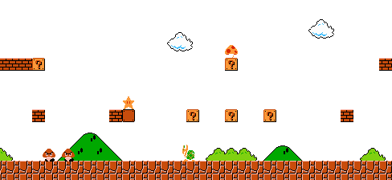

Les debuts de Nintendo :
Nintendo était a la base une entreprise qui fabriquait des jeux de carte : les Hanafuda
Cependant …
La première console portable de Nintendo …
Mais ce n’est que le début d’une longue ascension pour Nintendo …
Et Nintendo sort sa deuxième console portable …

Nintendo prépare alors un projet top-secret …
Les refontes des anciennes consoles
Un des succès de Nintendo arriva à grand pas …
La re-refonte des anciennes consoles …
Le retour de la réussite ...